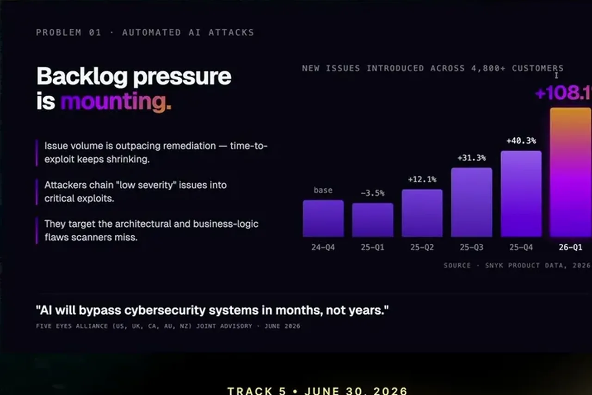
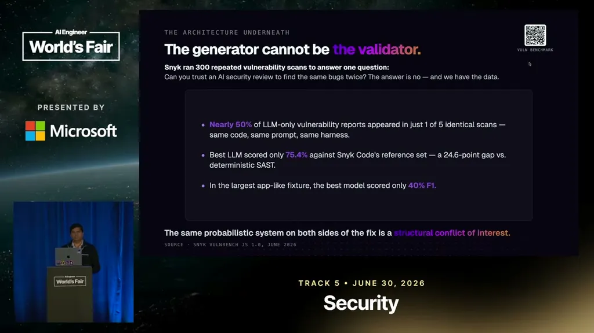
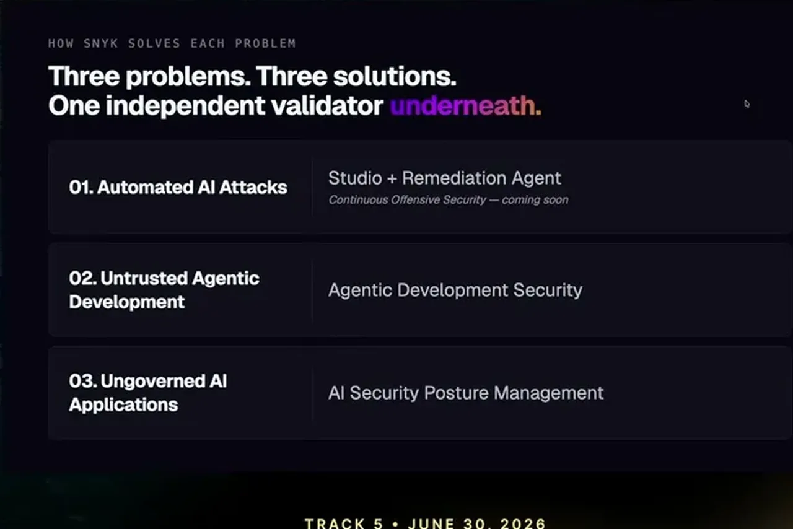

Nair cites data from 4,800-plus Snyk customers showing security backlog growing 108% quarter over quarter, even as coding agents improve. He frames this alongside a Five Eyes warning that AI will bypass cybersecurity systems within months, not years, arguing the trend is structural rather than a temporary adoption hiccup.
“Their actual backlog quarter over quarter is like 108% more backlog”
▶ watch at 06:50“AI will bypass cyber security systems in months, not years”
▶ watch at 07:45
Snyk's research found that a third or more of tested agent skills contain malware or vulnerabilities, and Nair says three lines of plain English can be enough to compromise a system through this route. He presents this as a new class of supply-chain risk distinct from vulnerable code itself.
“a third of them or more than third of them in all of the skills, not just you know, open claw, clawed, code acts, these skills actually have malware”
▶ watch at 08:50In Snyk's own red-team testing of new models, the newest frontier-class model extracted PII 100% of the time under attack, while a tested open model resisted a decision-override attack 0% of the time. Nair presents this as evidence that security posture varies sharply by model and changes as new models ship, not as a fixed property of 'AI'.
“100% 100% of the time our attacks were able to extract PI”
▶ watch at 11:55“0% of the time you were able to override the decision at least with our attacks”
▶ watch at 12:25
In new Snyk benchmark research, asking a model to find the same known vulnerability five times succeeded only 50% of the time across those runs, and the latest models found only 75% of issues a deterministic check caught, scoring a 40% F1 against that check. Nair uses this to argue for keeping generation and validation as separate systems rather than trusting a single model to grade its own output.
“of those ones are found across those five tests. That's not how you can run an enterprise system if you just use the LLM without any anything else”
▶ watch at 12:55“of the issues were found versus a good old boring deterministic check. And you know 40% was the F1 score”
▶ watch at 13:25Nair points to Labelbox reaching zero backlog using Snyk's remediation tooling, and a Fortune-scale company remediating 16,000 critical issues in a week with the same agent, framing this as evidence that the prevention-plus-remediation approach works at enterprise scale. He ties this back to Snyk's own footprint, noting the company secures roughly 5,000 enterprise customers including half of the Fortune 500.
“organizations like Labelbox to zero once, zero backlog. Which is very hard in security due to because it breaks applications”
▶ watch at 14:30“Half of Fortune 2 Fortune 500 runs on Sneak”
▶ watch at 01:35
Nair's numbers all come from Snyk's own product telemetry and red-team benchmarks, so they double as a sales pitch for Snyk's tooling; the underlying architectural point (don't let one model grade its own security homework) is worth weighing independently of the vendor doing the measuring. (ours)
| Stance | Claim | t |
|---|---|---|
| asserts | Snyk secures roughly 5,000 enterprise customers, including half of the Fortune 500. | 01:35 |
| asserts | Across 4,800+ customers, security backlog grew 108% quarter over quarter in the last year. | 06:50 |
| warns | More than a third of tested agent skills contain malware or exploitable vulnerabilities. | 08:50 |
| warns | Five Eyes intelligence leaders warned AI will bypass cybersecurity systems within months. | 07:45 |
| warns | A newly released frontier-class model was successfully attacked for PII extraction 100% of the time in Snyk's red-team tests. | 11:55 |
| asserts | The tested open model resisted a decision-override attack 0% of the time it was successfully overridden, meaning it was never overridden. | 12:25 |
| warns | Asked to re-find the same known vulnerability across five runs, a model succeeded only half the time. | 12:55 |
| asserts | The latest models found only 75% of issues a deterministic check found, with a 40% F1 score. | 13:25 |
| asserts | Snyk's remediation agent took Labelbox's backlog to zero. | 14:30 |
Machine-readable copy embedded in this page (script#ontology) and in the corpus ontology.